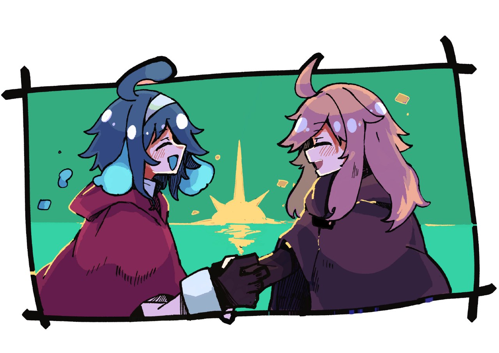

勇者路线
搭档：勇者 · 关键数值：不信点 / 信任次数 / 理智
第1章 放逐者▾
在勇者替「我」挡下箭矢陷阱、并一同经历一次休整后，二人在迷宫深处遇到了声称要向勇者复仇的放逐者。击败放逐者后，勇者毫不犹豫地杀了他，「我」开始反思要不要相信这个只会说是／否的勇者。
第2章 反派千金▾
在到达由反派千金的诅咒所幻化的宅邸后，反派千金主动带路并跟随二人同行、邀请他们参加茶话会、并且想与他们一同游戏。在女仆「鸽子」的人偶被破坏后，她坦言自己将身边的人改造成了人偶。反派千金最终因未能成功阻碍主角二人，孤注一掷地举剑冲向勇者而被勇者所杀，「我」依此再次在心里对勇者的行动做出了评估。
第3章 落选者▾
在一片深海一般的场景里，二人遇见了落选者。落选者揭穿真相——真正的勇者早已自杀、如今操纵那具身体的其实是蓝色史莱姆，并逼「我」在「跟勇者走／跟落选者走／谁都不信」之间做抉择。
第4章 史莱姆（勇者的真身／赫德）▾
在灼热迷宫里，先是僧侣现身邀请「我」跟随他，在被拒绝后离开前往迷宫的出口堵截二人。勇者被揭出作为蓝色史莱姆时与赤色史莱姆「赫德」的过去，二人击败赫德后，勇者在发觉红色史莱姆意图趁机偷袭「我」时放下犹豫，将其斩杀。
第5章 僧侣▾
终章，二人在邪神僧侣的神殿里了解了放逐者、反派千金、落选者的往事并击败了他们的幻影，在最终与僧侣对决，「我」的觉悟与最后一击QTE决定是走向勇者END还是败北。
结局




魔法使路线
搭档：魔法使 · 关键数值：魔力量 / 理智
第1章 放逐者▾
路上触发的陷阱把两人分隔在铁栅栏两侧，失去主角保护的魔法使被哥布林打成重伤；失去魔力的、仍然不太坦率的魔法使最终在平凡而温柔的主角的帮助下，在击败放逐者后，以对话方式解开了放逐者的心结。
第2章 反派千金▾
进入了迷宫化作的诡异宅邸，魔法使与士兵二人谈论起队伍里有内鬼的事情，其后，两人参加了人偶荷官的游戏并应邀加入了反派千金的茶话会，再获得了一些有关战斗或小队成员的情报后与反派千金展开决战，最终获胜离开。
第3章 落选者▾
在海底层，主角与魔法使二人与落选者对峙，在被击败后，他主动提出要以生命为代价归还魔法使的魔力，魔法使却将决定自己是否取回魔力的权力交予了你。这一章决定了后续是进入「取回魔力线」还是「不取回魔力」。
第4章 史莱姆▾
主角在红水晶迷宫里遇到化为被红色史莱姆操纵的「另一个自己」；无魔力路线会追加告白，告白的种类决定后续是恋人还是搭档结局。
第5章 僧侣▾
在取回魔力路线中，回到地上前夜，魔法使要你以小指拉钩立誓「绝不一个人死掉，和我一起活着离开迷宫」，是否定下这一誓约决定了是否能走向HE；而无魔力路线的结局由第4章的告白种类与最后是在放逐者、反派千金、落选者的帮助下打败僧侣还是单刷僧侣决定。
结局


僧侣路线
搭档：僧侣 · 关键数值：依恋点 / 理智
第1章 放逐者▾
在与僧侣的同行中，他一路都在讲述「伟大之神」的伟大，休息时，僧侣向你解释了「诅咒」是如何扭曲命运的，并不断向疲劳不堪的你抛出橄榄枝、引诱你依赖他与所谓的「伟大之神」。在这一层深处，二人与放逐者决战，被打败的放逐者揭露——正是僧侣诱导他走上这条袭击勇者小队的不归路，僧侣顺势坦言「我就是袭击勇者小队的主谋」，并讲明了自己所看到的、既定的命运。由你来决定要不要斩杀他为救援队的同伴复仇，以及要不要相信他近乎癫狂的说辞。
第2章 反派千金▾
在反派千金的宅邸里，你与僧侣的距离不断拉近，僧侣尝试喂你喝汤，并问你是否对「既定的命运中的」反派千金的悲惨结局感兴趣。在本层中，是否接受「舍弃僧侣以外的同伴」将直接决定结局走向。
第3章 落选者▾
在海底层中，落选者邀请你加入他组建的新的勇者小队，成为勇者，你累积的依恋点与理智，还有你在关键分岔路口的选择将决定后续结局走向。
第4章 史莱姆▾
来到红水晶迷宫后，僧侣向你讲述起了他作为「轮回者」的故事，但无论如何，你都无法否认他是袭击勇者小队、以及间接害死了救援队同伴的凶手的事实，可是对着这样落寞的僧侣，你却对对他痛下杀手这点于心不忍。在迷宫的尽头，你与僧侣二人遭遇了控制着另一个你的身体的红色精英史莱姆「赫德」，了解了一些有关最开始成为僧侣的青梅竹马的你与你错乱的回忆的真相。在章节末尾，被击败的赫德不甘心地想要偷袭你，却被僧侣挡下，是否救下僧侣决定是直接进入结局还是进入下一章。
第5章 转生者▾
救下僧侣后，绝望且濒临崩溃的僧侣提出了与你私奔，就此放弃拯救世界的职责，两个人直到世界毁灭都一起过平凡而温暖的日子的请求，你是否答应决定了结局的走向；而如果没有答应与僧侣私奔，已经通过的周目数与是否曾走过其他勇者小队成员的线路决定了能否打出TE。
结局


战士路线
搭档：战士 · 关键数值：理智 / 箱庭结局
第1章 放逐者▾
随着对迷宫一层不断深入，你对战士的理解也不断加深，到达这一层迷宫的深处时，二人遇到了被勇者小队流放的、曾借诅咒之力杀死了数百名救援队队员的原盗贼「放逐者」，击败他后，战士把处置放逐者的裁决权交给你。
第2章 反派千金▾
你与战士来到了第二层的宅邸，遇到了曾夺走战士的躯体、并把战士困在一具木偶的躯壳里的、战士的前未婚妻反派千金，在她展示过与战士二人的昔日回忆与她被退婚的经历时，当初事情的原委也随着战士的记忆被公开水落石出，但一切却早已覆水难收，她以「永远的平稳」和「归还身体」为饵劝降你与战士，你要决定是否接受提案，并在战士要求「要对三位对勇者小队下手的人一视同仁，杀或不杀必须一致」时选择推翻还是维持自己的裁决。
第3章 落选者▾
二人来到第三层的海底迷宫，落选者引诱你放弃救出勇者小队并与他结成同伴，组成新的勇者小队去打败魔王，拒绝邀请继续战士线，接受邀请则进入落选者BE 。在这一层，战士在落选者的启发下觉醒「用诅咒造物」的能力，并加强了他对于执念的坚持。二人击败落选者后对落选者的处置方式由前两章的的选择决定。
第4章 史莱姆▾
在第四层的红水晶迷宫，红色史莱姆对独自活下来的主人公满心怨恨与嫉妒，意图以必死的轮盘杀死主角，但轮盘被觉醒「破坏模式」的战士击碎，二人在迷宫深处将红色史莱姆斩杀，并为死去的救援队队员吊唁。
第5章 魔王与偶像▾
迷宫的出口竟直连魔王城。战士已独自斩杀魔王，要用诅咒把世界改写成没有悲剧的理想世界，在连续三场与战士的幻影死斗（未杀放逐者且选择一贯时，放逐者/落选者/反派千金会赶来挡下致命一击）之后，你必须在「接受他的世界」还是「阻止他」之间做最终决定。